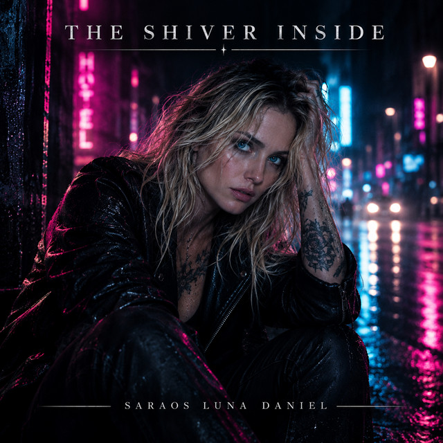
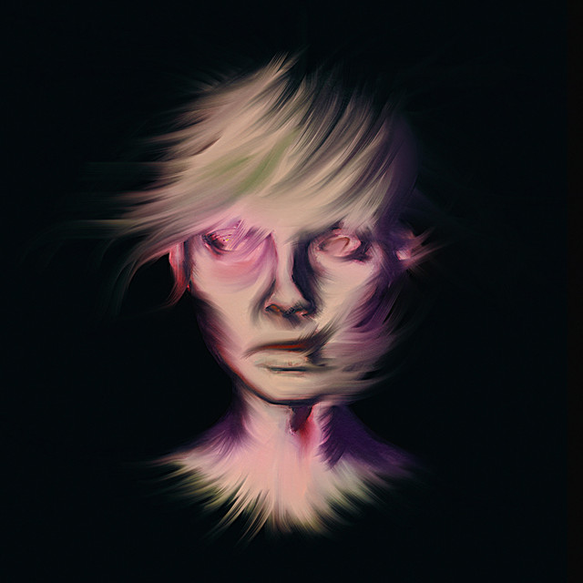
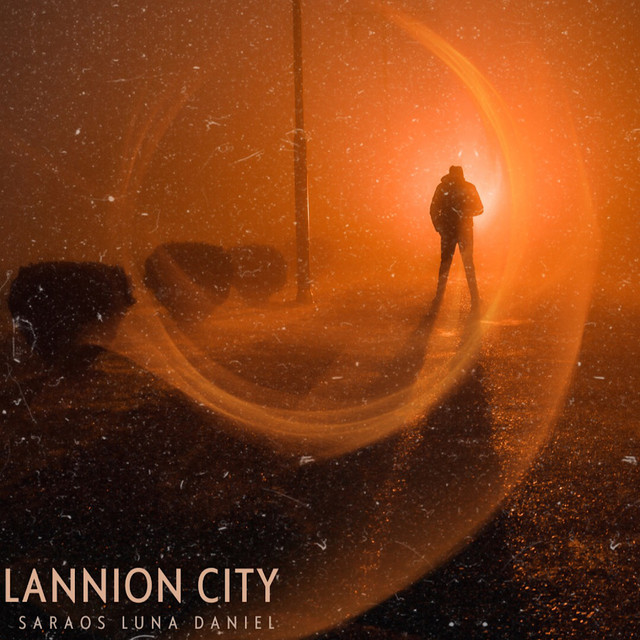
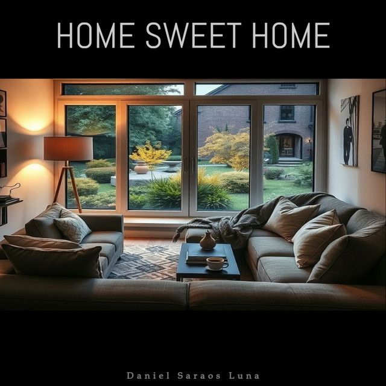
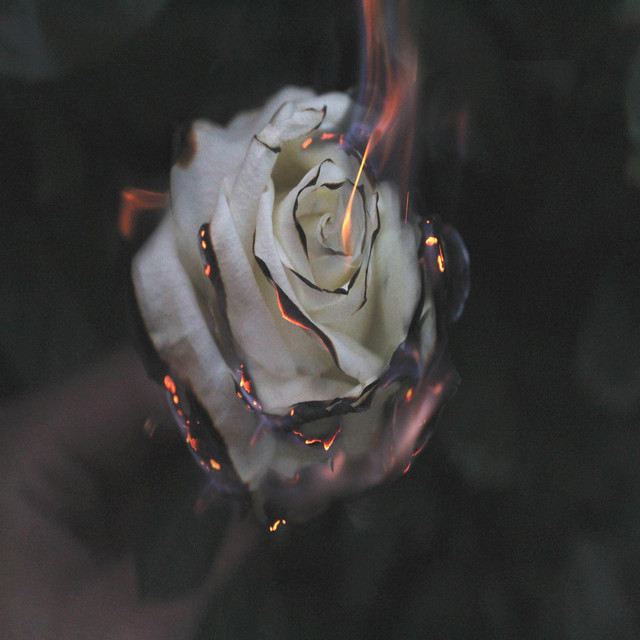
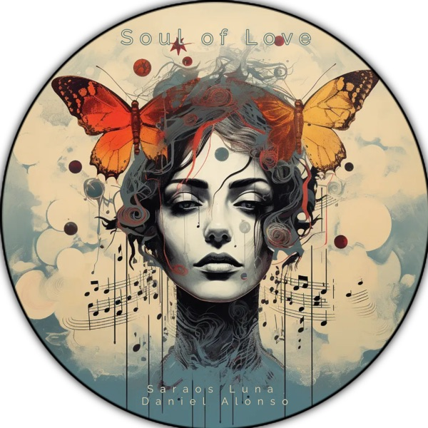

Paper Bird
Single · 2026
Rock, pop, folk & blues.
Things written in the margins.
Things that never quite leave you.
Your music. Your platform. Press play.

Discover the latest single by Saraos Luna Daniel Alonso.
Open Spotify →Selected releases
Popular on Spotify first — ordered by each release’s highest-placed track in the artist’s public Top Tracks. Releases outside that list follow in their existing order. Snapshot: 12 November 2026.
Single · 2026

Listen on Spotify →Album · 2021
Single · 2026

Listen on Spotify →Single · 2023
Single · 2025
Single · 2026
Single · 2025

Listen on Spotify →Single · 2025
Single · 2025
Single · 2024

Listen on Spotify →EP · 2021 · 5 tracks

Listen on Apple Music →EP · 2024 · 5 tracks
Titles, cover art and release years: Spotify · Soul of Love : Apple Music. Selection checked on 11 November 2026. Explore the full catalogue on the artist profile.
Faces, passing places, things that caught the eye. Sixteen photographs from the Spotify gallery — left here like loose pages on a studio floor.
Select any plate to view the original image in colour. Use the arrows to turn the pages.
Photographs sourced from Saraos Luna Daniel Alonso’s Spotify profile.
The Decline of the West
Saraos Luna Daniel Alonso · Linda Strawberry · Blondeu Cyril
“About as hauntingly heart-aching as music can get.”
Dave Franklin · Dancing About Architecture
Saraos Luna Daniel Alonso explores rock, pop, folk and blues through albums, EPs and singles. For him, making music is a form of therapy. In a world that can leave us feeling disconnected, music is an antidote.
This belief, shared in his Spotify biography, runs through a catalogue spanning the years: from The Decline of the West to the singles Paper Bird and The Shiver Inside.
Follow the artist on Instagram →No live dates have been announced here yet. Upcoming shows will be listed in this space.
Shows & collaborations →Bookings, collaborations or just a few words.
Connect with the artist on his official Instagram account.